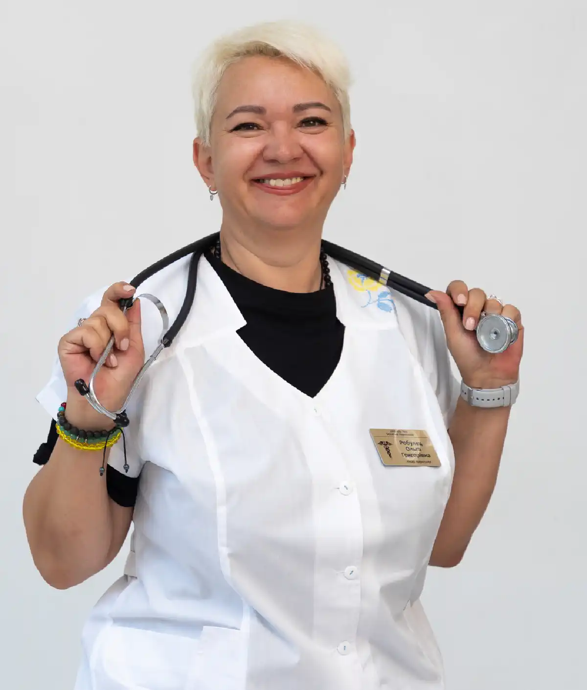

+38(068)
79 72 782
+38(068)
79 72 782Кодирование от алкоголизма в Чугуеве
Надежный старт для жизни без алкоголя


Бесплатная консультация, работаем круглосуточно 24/7
Надежный старт для жизни без алкоголя

Дата написания: Обновляется...
Последнее обновление: Обновляется...
Алкогольная зависимость — это сложное хроническое заболевание, которое затрагивает не только физическое состояние человека, но и его психоэмоциональную сферу, поведение и образ жизни в целом. Без своевременной помощи она постепенно прогрессирует, приводя к нарушениям работы внутренних органов, ухудшению качества жизни и социальной дезадаптации. Именно поэтому лечение должно быть комплексным, продуманным и проводиться под контролем специалистов.
Кодирование от алкоголизма в Чугуеве является одним из эффективных инструментов в борьбе с зависимостью, позволяющим быстро снизить патологическую тягу к спиртному и сформировать защитный барьер от повторного употребления. Суть метода заключается в создании устойчивой отрицательной реакции на алкоголь или формировании психологической установки на отказ от него. Это помогает пациенту удержаться от срывов и сосредоточиться на восстановлении здоровья и изменении образа жизни.
Современные подходы к кодированию основываются на индивидуальном подборе метода лечения. Врач учитывает длительность употребления, стадию зависимости, общее состояние организма, наличие хронических заболеваний и особенности психики пациента. Такой персонализированный подход позволяет сделать терапию максимально безопасной, контролируемой и эффективной. В результате повышается вероятность длительной ремиссии, снижается риск осложнений и создаются условия для полноценного возвращения к трезвой, стабильной жизни.
Подготовительный этап играет ключевую роль в эффективности кодирования, поскольку именно от него во многом зависит безопасность процедуры и её конечный результат. Перед проведением кодирования пациенту необходимо полностью отказаться от употребления алкоголя на определённый период — как правило, от 3 до 7 дней. Это позволяет организму частично восстановиться, снизить уровень интоксикации и подготовиться к дальнейшему лечению.
На этапе подготовки врач-нарколог проводит комплексную оценку состояния пациента: анализирует общее самочувствие, работу сердечно-сосудистой и нервной системы, выявляет возможные противопоказания и определяет степень зависимости. На основании этих данных подбирается наиболее подходящий и безопасный метод кодирования. В ряде случаев, особенно при длительном употреблении или выраженной интоксикации, предварительно рекомендуется проведение детоксикации. Она помогает очистить организм от продуктов распада алкоголя, нормализовать обменные процессы и значительно улучшить общее состояние пациента. Не менее важным фактором является психологическая готовность к лечению. Осознанное решение отказаться от алкоголя, внутренняя мотивация и понимание необходимости изменений существенно повышают эффективность кодирования. Когда пациент активно вовлечён в процесс лечения и настроен на результат, вероятность длительной ремиссии и устойчивого отказа от спиртного значительно возрастает.
В Чугуеве применяются различные методы кодирования, которые можно условно разделить на несколько категорий:
| Кодирование уколом | Цена |
|---|---|
| Инъекция препарата Дисульфирам (3, 6, 12 месяцев) | От 6000 грн |
| Инъекция препарата Эспераль (3, 6, 12 месяцев) | От 8000 грн |
| Инъекция препарата Тетлонг (3, 6, 12 месяцев) | От 8000 грн |
| Инъекция препарата Вивитрол (12 месяцев) | От 12000 грн |
| Инъекция препарата Аквилонг (12 месяцев) | От 12000 грн |
| Авторское трехэтапное кодирование уколом (1-5 лет) | От 12000 грн |
| Хирургическое кодирование от алкоголизма | Цена |
|---|---|
| Имплантация (подшивка) капсулы Эспераль (12, 18, 36 месяцев) | От 15000 грн |
| Имплантация (подшивка) геля Дисульфирам (12, 18, 36 месяцев) | От 15000 грн |
| Психотерапевтическое кодирование от алкоголизма | Цена |
|---|---|
| Кодирование по методу Довженко (Гипнозом) (1-5 лет) | От 10000 грн |
| Авторское кодирование от алкоголизма гипнозом (5 лет) | От 12000 грн |
| Трехэтапное кодирование от алкоголизма гипноз + метод Довженко (5-10 лет) | От 20000 грн |
| Психофармакологическое кодирование от алкоголизма (1-5 лет) | От 20000 грн |
| Кодирование от алкоголизма лазером | От 10000 грн |
| Таблетированное кодирование от алкоголизма | Цена |
|---|---|
| Кодирование от алкоголизма Эспераль таблетки | От 1400 грн |
| Кодирование от алкоголизма Тетурам таблетки | От 1400 грн |
| Кодирование от алкоголизма Капли Мидзо | От 1400 грн |
| Раскодировка от алкоголизма | От 4000 грн |
Да, кодирование от алкоголизма в Чугуеве проводится с соблюдением полной конфиденциальности и принципов медицинской тайны. Вся информация о пациенте, его состоянии здоровья, факте обращения и проведённом лечении надёжно защищена и не подлежит разглашению без его личного согласия. Пациент может обратиться за помощью анонимно — без постановки на учёт и без передачи каких-либо данных третьим лицам, включая работодателей, родственников или государственные структуры. Это особенно важно для людей, которые переживают за свою репутацию, профессиональную деятельность или социальный статус и хотят сохранить приватность лечения.
Анонимный формат обращения позволяет снять внутренние барьеры и страхи, которые часто мешают сделать первый шаг к выздоровлению. Человек чувствует себя более уверенно, не испытывает давления и может открыто обсудить свою проблему со специалистом. Кроме того, конфиденциальность способствует формированию доверия между пациентом и врачом, что является важной частью успешного лечения. В спокойной и безопасной обстановке пациент может сосредоточиться на терапии, следовать рекомендациям специалиста и постепенно двигаться к устойчивому результату и трезвой жизни.
Кодирование может демонстрировать высокую эффективность даже при длительной и хронической форме алкоголизма, когда зависимость уже закрепилась на уровне физиологии и психики. В таких случаях процедура помогает снизить выраженность тяги к спиртному и временно стабилизировать состояние пациента. Однако важно понимать, что кодирование не является универсальным или окончательным решением проблемы, а выступает лишь частью более широкого лечебного процесса.
Основная задача кодирования — создать своеобразный защитный механизм, который препятствует употреблению алкоголя. Это может быть как физиологическая реакция организма на спиртное, так и сформированная психологическая установка на отказ от него. Благодаря этому у человека появляется возможность прервать цикл употребления, уменьшить количество срывов и сосредоточиться на восстановлении здоровья.
Тем не менее, при хронической зависимости одной процедуры недостаточно для достижения стабильного и долгосрочного результата. Алкоголизм формируется не только как физическая, но и как психологическая проблема, связанная с привычками, стрессом, эмоциональным состоянием и образом жизни. Именно поэтому после кодирования крайне важно продолжить лечение и закрепить полученный эффект. Комплексный подход включает в себя психотерапию, направленную на выявление и проработку причин зависимости, обучение навыкам самоконтроля и стрессоустойчивости, а также этап реабилитации. Важную роль играет изменение образа жизни: формирование новых поведенческих моделей, отказ от окружения и ситуаций, провоцирующих употребление, восстановление режима сна, питания и физической активности.
Выбор метода кодирования от алкоголизма — это важный и ответственный этап, от которого во многом зависит эффективность лечения и его безопасность. Не существует универсального способа, который одинаково хорошо подходит всем пациентам, поскольку алкогольная зависимость формируется по-разному и сопровождается индивидуальными особенностями организма и психики. На принятие решения влияет целый комплекс факторов:
Каждый из этих параметров играет важную роль в формировании индивидуальной стратегии лечения. Например, при выраженной физической зависимости могут быть более эффективны медикаментозные методы, тогда как при сильной психологической тяге акцент делается на психотерапии или комбинированных подходах. Именно поэтому окончательное решение о выборе метода кодирования должен принимать врач-нарколог после комплексной диагностики. Специалист оценивает текущее состояние пациента, выявляет риски, определяет возможные ограничения и подбирает наиболее безопасный и эффективный вариант терапии. Самостоятельный выбор метода или ориентирование только на советы знакомых может привести к низкой эффективности лечения, отсутствию результата или даже к ухудшению состояния. В некоторых случаях неправильно выбранный метод может не только не помочь, но и спровоцировать осложнения. Индивидуальный подход — это основа успешного лечения алкогольной зависимости.
Медикаментозное кодирование основано на применении специальных препаратов, которые воздействуют на физиологические механизмы зависимости и формируют стойкую негативную реакцию организма на алкоголь. Такой подход позволяет создать своеобразный защитный барьер, при котором употребление спиртного становится не только нежелательным, но и физически неприятным.
На практике чаще всего используются препараты на основе дисульфирама или налтрексона. Средства первой группы блокируют ферменты, участвующие в расщеплении алкоголя, в результате чего даже небольшое количество спиртного вызывает выраженную реакцию — покраснение кожи, тошноту, учащённое сердцебиение, слабость и общее ухудшение самочувствия. Это формирует условно-рефлекторное отвращение к алкоголю. Препараты на основе налтрексона действуют иначе — они снижают чувство удовольствия от употребления алкоголя, уменьшая психологическую тягу и интерес к спиртному.
Метод может применяться в различных формах: инъекции, имплантация (подшивка), капсулы или таблетки. Выбор формы зависит от клинической ситуации, состояния пациента и желаемой длительности эффекта. В зависимости от препарата действие может сохраняться от нескольких месяцев до года и более. Медикаментозное кодирование отличается высокой эффективностью, особенно при соблюдении рекомендаций врача и наличии мотивации у пациента. Оно помогает быстро снизить риск срывов, стабилизировать состояние и создать благоприятные условия для дальнейшего лечения и восстановления.
Хирургическое кодирование (подшивка) — это метод лечения алкогольной зависимости, при котором под кожу пациента вводится препарат пролонгированного действия. Процедура проводится в стерильных условиях и занимает минимальное количество времени, при этом не требует длительной госпитализации и сложного восстановления. После введения лекарственное вещество начинает постепенно высвобождаться в организм, поддерживая стабильную концентрацию действующего компонента в крови. За счёт этого формируется длительный защитный эффект: при попытке употребления алкоголя возникает выраженная негативная реакция организма, что существенно снижает вероятность срывов.
Срок действия подшивки может варьироваться от нескольких месяцев до нескольких лет в зависимости от выбранного препарата, его дозировки и индивидуальных особенностей пациента. Это делает метод удобным для тех, кто хочет получить длительную «защиту» без необходимости постоянного контроля или регулярного приёма медикаментов. Хирургическое кодирование особенно подходит пациентам с хронической формой зависимости, частыми запоями и высоким риском возврата к употреблению. Оно позволяет создать надёжный физиологический барьер и даёт человеку время для восстановления, изменения образа жизни и работы с психологическими причинами зависимости.
Психологическое кодирование основано на целенаправленном воздействии на психику и подсознательные установки пациента. Главная задача метода — изменить отношение к алкоголю, снизить внутреннюю тягу и сформировать устойчивую установку на трезвый образ жизни. В отличие от медикаментозных способов, здесь акцент делается не на физиологической реакции организма, а на работе с мышлением, эмоциями и поведенческими моделями. Наиболее известной формой такого подхода является гипнотерапия. Во время сеанса специалист погружает пациента в состояние глубокого расслабления и повышенной концентрации, что позволяет обойти психологические барьеры и работать напрямую с подсознанием. В этот момент формируются установки на отказ от алкоголя, усиливается мотивация к изменениям и закрепляется негативное восприятие спиртного.
Дополнительно могут использоваться элементы психотерапии: работа с триггерами, стрессовыми ситуациями, внутренними конфликтами и причинами зависимости. Это помогает не только временно снизить тягу, но и изменить привычные реакции на жизненные трудности без использования алкоголя. Метод особенно эффективен у пациентов с высокой внушаемостью, хорошей концентрацией и выраженным желанием избавиться от зависимости. При наличии внутренней готовности к изменениям психологическое кодирование может давать устойчивый и длительный результат, особенно в сочетании с другими методами лечения и последующей реабилитацией.
Таблетированные препараты применяются как вспомогательный элемент в комплексном лечении алкогольной зависимости и чаще всего используются для поддержания достигнутого результата после кодирования. Они не заменяют основные методы терапии, но значительно усиливают их эффективность и помогают пациенту легче адаптироваться к трезвому образу жизни.
Основное действие таких препаратов направлено на снижение патологической тяги к алкоголю, стабилизацию психоэмоционального состояния и уменьшение выраженности симптомов, связанных с отказом от спиртного. Некоторые средства уменьшают удовольствие от употребления алкоголя, другие — формируют негативную реакцию на него, а также помогают справляться с тревожностью, раздражительностью, нарушениями сна и перепадами настроения.
Дополнительно таблетированные формы могут поддерживать работу нервной системы, улучшать обменные процессы и способствовать общему восстановлению организма после длительного употребления алкоголя. Это особенно важно в первые недели и месяцы отказа от спиртного, когда риск срыва остаётся наиболее высоким. Важно понимать, что приём таких препаратов должен осуществляться исключительно под контролем врача.
Отказ от лечения — одна из самых распространённых и сложных проблем при алкогольной зависимости. Человек может не признавать наличие заболевания, недооценивать его последствия или бояться изменений, поэтому попытки убедить его «в лоб» часто вызывают сопротивление и агрессию. В таких ситуациях важно отказаться от давления и конфронтации, поскольку жёсткие методы, как правило, дают обратный эффект. Гораздо эффективнее использовать спокойный, поддерживающий подход — говорить о последствиях, выражать заботу и показывать, что помощь доступна и безопасна.
Существенную роль играет работа со специалистами. Консультация нарколога или психолога помогает оценить ситуацию, выбрать правильную тактику общения и выстроить стратегию мотивации. Также важна поддержка со стороны родственников: они могут научиться правильно взаимодействовать с зависимым человеком, не усиливая проблему и не провоцируя её развитие. В некоторых случаях применяется метод интервенции — это продуманное и деликатное вмешательство, при котором близкие совместно со специалистом помогают человеку осознать серьёзность состояния и необходимость лечения. Такая беседа проводится в спокойной обстановке и направлена не на давление, а на формирование внутренней мотивации к изменениям. Главная цель — не заставить, а помочь человеку самостоятельно принять решение о лечении. Именно осознанное согласие значительно повышает эффективность терапии и снижает риск отказа от помощи в будущем.
Кодирование не проводится в состоянии алкогольного опьянения, так как в этот момент организм находится под воздействием токсинов, а психоэмоциональное состояние пациента нестабильно. Проведение процедуры в таких условиях может быть не только неэффективным, но и небезопасным для здоровья. Перед кодированием пациент обязательно должен быть полностью трезвым и пройти подготовительный этап. Это включает воздержание от алкоголя в течение определённого времени, а также оценку общего состояния организма. Такой подход позволяет снизить риски осложнений и обеспечить максимальную эффективность выбранного метода лечения.
В случае запоя или выраженной интоксикации первым этапом становится детоксикация. Она направлена на выведение продуктов распада алкоголя, нормализацию работы внутренних органов и стабилизацию состояния пациента. Только после того, как организм очищен, а самочувствие улучшено, можно переходить к процедуре кодирования. Соблюдение этих условий является обязательным, поскольку позволяет не только повысить результативность лечения, но и сделать его максимально безопасным для пациента.
Кодирование помогает снизить или временно устранить физическую тягу к алкоголю, однако оно не затрагивает глубинные психологические причины зависимости. Привычки, поведенческие сценарии, реакция на стресс и внутренние конфликты остаются, и без их проработки риск возврата к употреблению остаётся достаточно высоким.
Именно поэтому после кодирования крайне важно продолжить лечение и пройти этап реабилитации. Он направлен на изменение мышления, формирование новых моделей поведения и развитие навыков, позволяющих справляться с жизненными трудностями без алкоголя. В процессе реабилитации человек учится распознавать триггеры, контролировать эмоции, восстанавливает внутренний баланс и постепенно возвращается к полноценной жизни.
Большое значение имеет изменение образа жизни: выработка режима дня, нормализация сна, физическая активность, отказ от окружения, связанного с употреблением, и формирование новых, здоровых привычек. Всё это создаёт устойчивую основу для трезвости. Комплексный подход, который включает кодирование, психотерапию и реабилитацию, значительно повышает шансы на длительную ремиссию. Он позволяет не только временно отказаться от алкоголя, но и закрепить результат, снизить вероятность срывов и вернуться к стабильной, качественной жизни без зависимости.
Наркологическая помощь в Чугуеве включает полный спектр услуг, направленных на комплексное лечение зависимости и восстановление организма на всех этапах: от экстренной помощи до полноценной реабилитации. Такой подход позволяет не просто временно устранить симптомы, а глубоко проработать проблему и снизить риск повторного употребления. В программу помощи входят:
Каждый этап лечения подбирается индивидуально с учётом состояния пациента, стажа употребления и особенностей организма. Врач контролирует динамику, при необходимости корректирует терапию и сопровождает пациента на протяжении всего процесса восстановления. Обращение к специалистам позволяет не только избавиться от зависимости, но и восстановить физическое и психоэмоциональное здоровье, улучшить качество жизни и вернуть контроль над собой. Своевременное лечение значительно снижает риск осложнений и открывает путь к стабильной, полноценной и трезвой жизни. Алкогольная зависимость — это состояние, которое требует профессионального вмешательства и комплексного подхода. Чем раньше начато лечение, тем выше вероятность быстрого восстановления и устойчивого результата. Не откладывайте обращение за помощью — это важный шаг к новой жизни без зависимости.
Звоните прямо сейчас: +38(050-021-69-57)

Статья проверена экспертом
Могучев Станислав
Врач терапевт, ординатор
Возможно интересная статья:
Янтарная кислота, Бетаргин и Энтеросгель при алкогольной интоксикации

Да, мы строго соблюдаем полную конфиденциальность на всех этапах лечения. Информация о пациенте, диагнозе и прохождении терапии не передаётся третьим лицам. Обращение к нам не влечёт постановку на учёт. Вы можете быть уверены в безопасности и анонимности.
Программа лечения разрабатывается индивидуально после консультации со специалистом. Учитываются вид зависимости, её длительность, физическое и психологическое состояние пациента. Такой подход позволяет повысить эффективность терапии и снизить риск срыва. Мы не используем шаблонные решения.
Да, мы сопровождаем пациентов и после основного курса лечения. Проводятся консультации, рекомендации по адаптации и профилактике рецидивов. При необходимости возможна дальнейшая психологическая поддержка. Это помогает сохранить результат и вернуться к полноценной жизни.
Александр

Решила сделать укол от алкоголизма по рекомендации подруги, которая проходила эту процедуру в этом же центре. Я сомневалась, но врачи всё объяснили, успокоили. После укола не чувствую тяги к алкоголю, хотя раньше сложно было представить день без выпивки. Сейчас наслаждаюсь трезвостью, чувствую себя намного лучше.
Анонимно
Дуже довго не міг самостійно позбавитися залежності, тому зважився на підшивку. Процедура пройшла успішно, і з того часу я навіть не думаю про спиртне. Страх перед можливими наслідками допомагає триматися на плаву, а підтримка фахівців – величезна підмога у цьому нелегкому шляху. Центр надає як фізичну, а й моральну допомогу. Вдячний їм за другий шанс.
Анонимно
Я никогда не думал, что психологическое воздействие может настолько сильно повлиять на мою жизнь. Врач помог осознать всю серьезность ситуации, и теперь алкоголь не вызывает у меня никакого интереса. Процедура безопасна и эффективна, рекомендую тем, кто хочет по-настоящему изменить свою жизнь.
Анонимно
Я прошла кодирование гипнозом, и это было удивительное переживание. Во время сеанса я почувствовала глубокое расслабление, а потом – будто внутри что-то изменилось. Сейчас я свободна от алкоголя и наслаждаюсь этим состоянием. Благодарю центр за профессионализм и заботу! Отдельная благодарность Станиславу Вячеславовичу
Анонимно
Чесно кажучи, боявся рецидиву, але з процедури минуло півроку, і я навіть не думаю про випивку. Життя почало змінюватися на краще. Дякуємо лікарям за підтримку та мотивацію!
Анонимно
Після багаторічної боротьби із залежністю вирішила звернутись в клінку. Спочатку переживала, але лікарі дуже докладно розповіли про процес та можливі наслідки. Зараз я не п’ю вже 8 місяців і почуваюся чудово. Я така щаслива, що знайшла цей центр і знайшла контроль над своїм життям.
Анонимно
Метод Долженко казался мне странным, но я решил попробовать. Оказалось, что это не просто кодировка, а глубокая работа с психикой. Это позволило мне кардинально изменить отношение к алкоголю. Уже год я не пью, и не планирую возвращаться к прежней жизни. Простое человеческое спасибо!
Анонимно
Гипноз помог мне избавиться от постоянной тяги к алкоголю. После сеансов я заметила, что стала спокойнее и увереннее в себе. Теперь алкоголь меня больше не интересует. Центр мне очень помог, и я благодарна за их заботу и поддержку.
Номер телефона:
+380 (68) 797 27 82
+380 (50) 021 69 57
Адрес наркологического центра вашего города уточняйте по
телефону
Работаем в: Киеве, Одессе, Львове, Харькове, Днепре,
Запорожье, Черкассах, Чугуеве, Черноморске, Каменском
Telegram: t.me/umbrellaplus
График работы: Круглосуточно